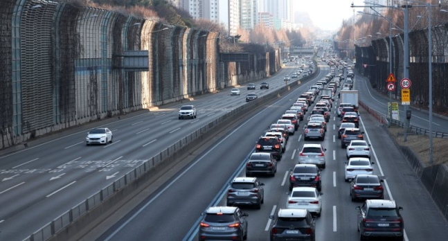

설 연휴 마지막 날인 지난 12일 서울 서초구 잠원IC 인근 경부고속도로 상행선 귀경길 상황. 뉴시스 제공
[파이낸셜뉴스] 설 연휴기간 동안 총 3071만명이 이동한 것으로 나타났다. 특히 설 당일 고속도로 통행량은 역대 최대 수준인 629만대를 기록했다.
국토교통부는 설 연휴 특별교통대책 기간인 지난 8일부터 12일까지 5일간 총 3071만명이 이동했다고 14일 밝혔다. 이는 전년 대비 10.2% 증가한 수치다.
고속도로 총 통행량은 전년 대비 7.9% 증가한 2721만대다. 설 당일인 지난 10일 통행량은 설 연휴기간 일 통행량으로는 역대 최대 수준인 629만대를 기록했다. 국토부는 팬데믹 이후 귀성·여행객 증가에 따른 것으로 분석했다.
고속도로 최대 소요시간은 전체적으로 전년 대비 소폭 감소했다. 서울→부산은 전년 대비 10분 감소했고, 서울→목포는 전년 대비 20분 줄었다.
교통수단별 분담률의 경우, 승용차 이동비율 증가로 승용차 분담률이 전년 대비 0.9% 증가(92.2%→93.1%)했다. 여행 수요 확대 등으로 항공 분담률도 다소 증가(0.6%→1.2%)했다.
국토부는 고속도로 휴게소, 공항 등 주요 교통시설에서 이용 편의 서비스도 차질 없이 제공됐다고 소개했다. 3500원 이하 알뜰간식 판매(10종 이상)는 전체 휴게소(207개) 중 202개 휴게소(97.5%)에서 시행했고, 휴게소 혼잡안내를 지원하기 위해 서비스 인력도 증원됐다.
이동식 전기차 무료 충전서비스는 11개 휴게소에서 504대가 이용했다.
아울러 드론과 암행순찰차를 연계한 합동단속과 뉴미디어와 전광판 등을 통해 대책기간 중 전국의 교통사고 발생건수는 1201건으로 전년 대비 39.5% 감소했다. 사망자 수는 19명으로 전년 대비 29.7% 줄었다. 철도, 항공의 경우에는 별다른 사고는 없었다.
박지홍 국토부 교통물류실장은 “이번 연휴기간 교통 수요 분석 등을 통해 국민들의 교통 안전과 이동 편의가 증진될 수 있도록 지속적으로 노력하겠다”고 밝혔다.
그렇다고 한다